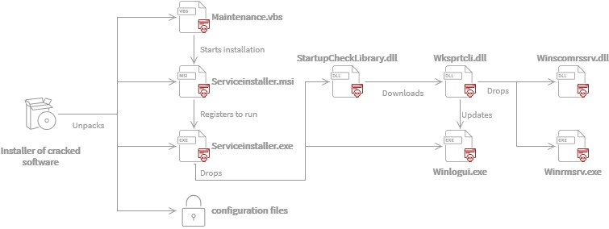

“Crackonosh” Malware
It is reported that a new strain of cryptocurrency miner dubbed as Crackonosh is spreading through abusing windows Safe mode in its attack and escape detection. The malware is distributed through illegal and cracked copies of popular software. Crackonosh has been circulating since at least June 2018.
Infection Mechanism:
The infection chain starts with an installer and a script that is deployed along with pirated/cracked software and modifies Windows registry to allow critical malware executable to run in Safe mode. The infected system boot in Safe mode in next start up. The malware encase itself in password protected archive and unpack during installation process. While system is in Safe mode, AV software doesn’t work and this can enable the malicious Serviceinstaller.exe to disable/delete Windows defender. It also uses WQL to query all antivirus software installed. Command listed below:
SELECT * FROM AntiVirusProduct
The malware also able to disable the anti-virus software from other popular companies including Avast, Kaspersky, Norton, McAfee's scanner and Bitdefender etc. with the following command:
"rd < AV directory > /s /q" (here < AV directory > is the default directory name that a specific antivirus software uses.)

Fig.1 “Crackonosh” installation process. (source:avast)
It also deletes registry entries to turn off automatic updates and replace Windows Security with a fake green tick tray icon. Log system files are then wiped to avoid detection. The final step of infection chain is the deployment of XMRig cryptocurrency miner that utilizes the system resources and power to mine the Monero (XMR) cryptocurrency. This miner has proved itself to be very profitable for its authors and in total 30 variants of this malware have been identified.
IoC:
Common file names:
- C:\Windows\System32\7B296FC0-376B-497d-B013-58F4D9633A22-5P-1.B5841A4C-A289-439d-8115-50AB69CD450
- C:\Windows\System32\7B296FC0-376B-497d-B013-58F4D9633A22-5P-1.B5841A4C-A289-439d-8115-50AB69CD450B
- C:\Windows\System32\StartupCheckLibrarry.dll
- UserAccountControlSettingsDevice.dat
- C:\Windows\System32\diskdriver.exe
- C:\Windows\System32\install.vbs
- C:\Windows\System32\maintenance.vbs
- C:\Windows\System32\serviceinstaller.exe
- C:\Windows\System32\serviceinstaller.msi
- C:\Windows\System32\startupcheck.vbs
- C:\Windows\System32\windfn.exe
- C:\Windows\System32\winrmsrv.exe
- C:\Windows\System32\winscomrssrv.dll
- C:\Windows\System32\wksprtcli.dll
For the list of URLs obtaining TXT DNS records, kindly refer the following URL:
For the complete list of IoC including Hashes, Network indicators, file names, registry key, Mutexes and Monero Wallet addresses, kindly refer the following URL:
Countermeasures:
-
Following Scheduled Tasks (Task Schedulers) should be deleted:
- Microsoft\Windows\Maintenance\InstallWinSAT
- Microsoft\Windows\Application Experience\StartupCheckLibrary
- Microsoft\Windows\WDI\SrvHost\
- Microsoft\Windows\Wininet\Winlogui\
- Microsoft\Windows\Windows Error Reporting\winrmsrv\
- Delete the following file from C:\Documents and Settings\All Users\Local Settings\Application Data\Programs\Common (%localappdata%\Programs\Common)
- UserAccountControlSettingsDevice.dat
- For the detailed steps to be taken for the fully removal of Crackonosh malware kindly refer the first URL listed in "References" tab below.
- Use only genuine and authentic software from reputed service providers/ companies.
- Keep updated Antivirus/Antimalware software to detect any threat before it infects the system/network. Always scan the external drives/removable devices before use. Leverage anti-phishing solutions that help protect credentials and against malicious file downloads.
- Use limited privilege user on the computer or allow administrative access to systems with special administrative accounts for administrators.
- Network administrators should continuously monitor systems and guide their employees to recognize any above-normal sustained CPU loading activity on computer workstations, mobile devices, and network servers. Network activity should continuously be monitored for any unusual activity.
- Maintain browser extensions as some attackers are using malicious browser extensions or poisoning legitimate extensions to execute cryptomining scripts.
- Disable Autorun and Autoplay policies.
- Consider using application whitelists to prevent unknown executables from launching autonomously.
- Delete the system changes made by the malware such as files created/ registry entries /services etc.
- Monitor traffic generated from client machines to the domains and IP address mentioned in Installation section.
- Disable unnecessary services on agency workstations and servers.